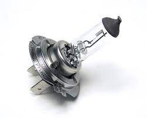

Changing of Headlight Bulbs
Headlights are crucial for safe driving, and if one or both of your headlight bulbs have burnt out, it's important to replace them promptly. Follow these steps to change your car's headlight bulbs:
Step 1: Gather Materials
Before you begin, make sure you have the following:
- New headlight bulbs (check your car's manual for the correct type)
- Screwdriver or socket wrench (if necessary)
- Clean cloth or gloves to avoid touching the new bulbs with bare hands
Step 2: Locate the Headlight Bulbs
Identify the location of the headlight bulbs. This information can usually be found in your car's manual. Common locations include under the hood or behind the headlight assembly.
Step 3: Access the Bulbs
Depending on your car model, you may need to access the bulbs from inside the engine compartment or behind the headlight assembly. Open the hood to access the bulbs.
Step 4: Remove the Old Bulbs
Unplug the electrical connector from the back of the old bulb. Remove any retaining clips or screws that hold the bulb in place. Carefully take out the old bulb without touching the glass part.
Step 5: Install the New Bulbs
Take the new headlight bulb and carefully insert it into the headlight socket. Secure it with any retaining clips or screws. Reconnect the electrical connector to the back of the new bulb.
Step 6: Test the Headlights
Turn on your headlights to ensure that the new bulbs are functioning correctly. If they both light up, you've successfully replaced your headlight bulbs.
Learn how to change your car's headlight bulbs.
